SMILE Lab
Academic Genealogy
A chain of mentorship spanning four centuries, from Friedrich Leibniz (1622) to present. Source: Mathematics Genealogy Project.
Academic Family Tree
Both advisor branches of Felix Klein shown. Gauss branch (left) via Plücker · Euler branch (right) via Lipschitz. Fork at Jakob Thomasius, who advised both Mencke and G.W. Leibniz.
Common root
Gauss branch
Euler branch
Merged
EE / DSP
Current
✶ Landmark figure
NAE Natl. Academy
Complete Academic Lineage
From Friedrich Leibniz (1622) to Ruogu Fang — four centuries, 27 scholars.
| Branch | Year | Name | ||
|---|---|---|---|---|
| Common Root — shared ancestor of both branches | ||||
| Root | 1622 | FL Friedrich Leibniz 1597–1652 |
||
| 1643 | JT Jakob Thomasius 1622–1684 |
|||
| Gauss Branch — Thomasius → Mencke → … → Plücker (1st advisor to Klein) | ||||
| Gauss | 1666 | OM Otto Mencke 1644–1707 |
||
| 1685 | JW J. C. Wichmannshausen 1663–1727 |
|||
| 1713 | CH Christian August Hausen 1693–1743 |
|||
| 1739 | AK Abraham G. Kästner 1719–1800 |
|||
| 1786 | 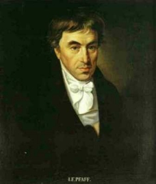 Johann Friedrich Pfaff 1765–1825 |
|||
| 1799 | 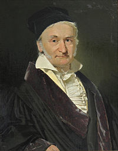 Carl Friedrich Gauss ★ 1777–1855 |
|||
| 1812 | 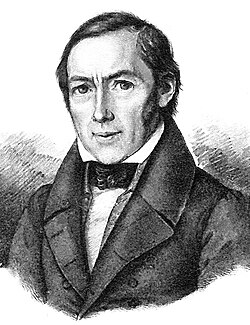 Christian L. Gerling 1788–1864 |
|||
| 1823 | 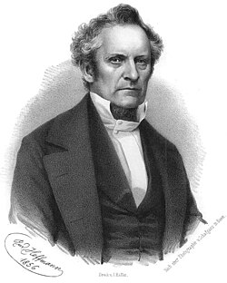 Julius Plücker 1801–1868 |
|||
| Euler Branch — Thomasius → G.W. Leibniz → … → Lipschitz (2nd advisor to Klein) | ||||
| Euler | 1666 | 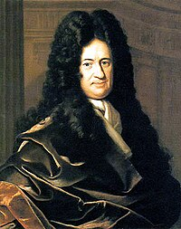 Gottfried W. Leibniz ★ 1646–1716 |
||
| 1684 | 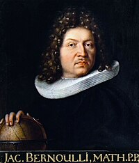 Jacob Bernoulli 1655–1705 |
|||
| 1694 | 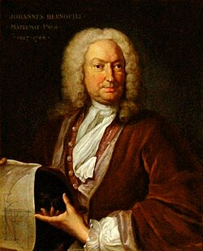 Johann Bernoulli 1667–1748 |
|||
| 1726 | 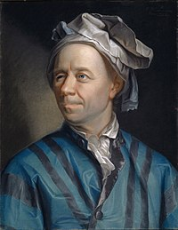 Leonhard Euler ★ 1707–1783 |
|||
| ~1754 | 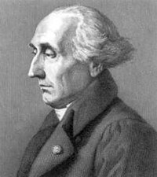 Joseph-Louis Lagrange ★ 1736–1813 |
|||
| ~1800 | 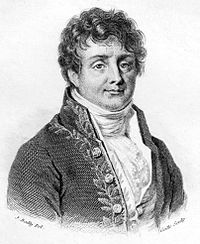 Jean-Baptiste Fourier ★ 1768–1830 |
|||
| ~1800 |  Siméon Denis Poisson ★ 1781–1840 |
|||
| 1827 | 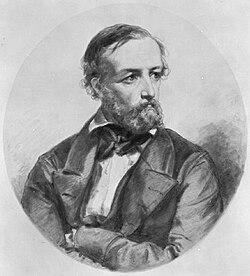 Gustav Dirichlet ★ 1805–1859 |
|||
| 1853 | 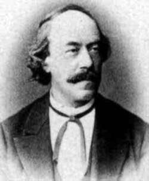 Rudolf Lipschitz 1832–1903 |
|||
| Both Branches Merge at Felix Klein | ||||
| Merged | 1868 | 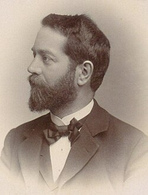 Felix Klein ★ 1849–1925 |
||
| 1873 | 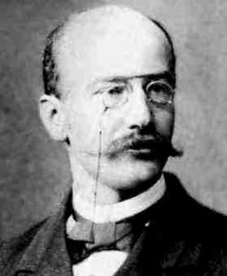 Ferdinand von Lindemann ★ 1852–1939 |
|||
| 1891 | 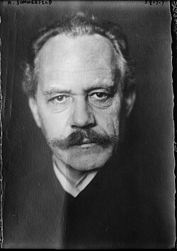 Arnold Sommerfeld ★ 1868–1951 |
|||
| Electrical Engineering & Signal Processing | ||||
| EE/DSP | 1926 | EG Ernst A. Guillemin ★ 1898–1970 |
||
| 1948 | DT David Fears Tuttle, Jr. 1914–? |
|||
| 1952 | EK Ernest S. Kuh NAE 1928–2015 |
|||
| 1962 | SM Sanjit K. Mitra NAE 1935– |
|||
| 1982 | PV P. P. Vaidyanathan NAE 1954– |
|||
| 1993 | TC Tsuhan Chen 1966– |
|||
| Current Generation | ||||
| Present | 2014 | Ruogu Fang |
||
Data compiled from the Mathematics Genealogy Project ·
Ruogu Fang on MGP